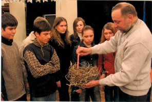
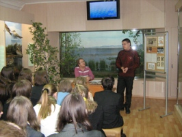
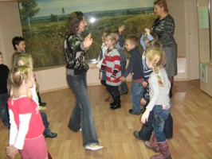

|  |  |  |
| Занятие Эколого-краеведческой школы (ЭКШ) по теме «Особенности животного мира Саратовской области». Лектор А.В. Беляченко, канд. биол. наук, доцент СГУ. Фото 2006 г. | Занятие клуба «Формула жизни» по антиалкогольной тематике. Выступает Д. Бурлаков, студент исторического факультета СГУ, председатель молодёжного движения «Трезвый Саратов». Фото 2009 г. | Игровую экскурсию «В гости к сусликам» для воспитанников ДОУ № 35 «Фантастика» проводит Ю.Р. Исаханова, ст. научный сотрудник отдела природы. Фото 2008 г. |
На базе экспозиции отдела природы проводится работа по экологическому просвещению, образованию и воспитанию детей с применением новейших методов музейной педагогики. При финансовой поддержке Министерства культуры, Комитета охраны окружающей среды и природопользования Саратовской области реализуются эколого-социальные проекты: